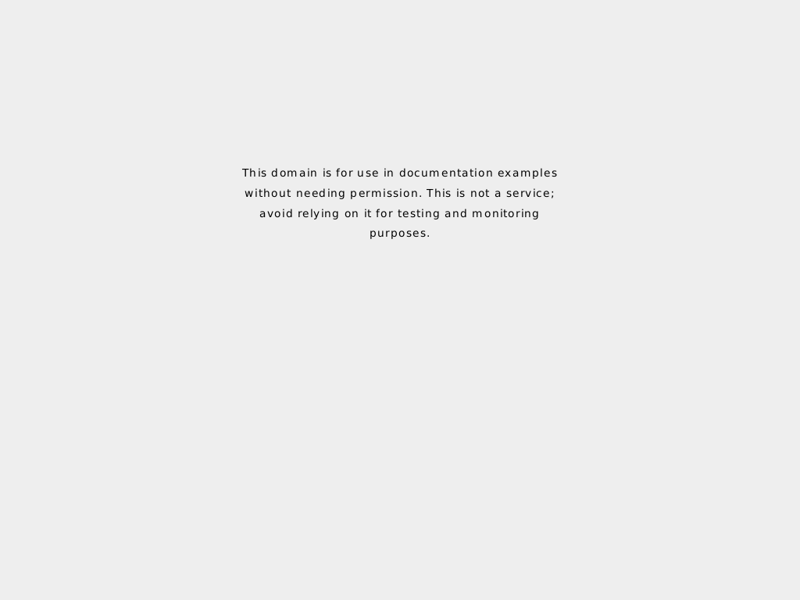
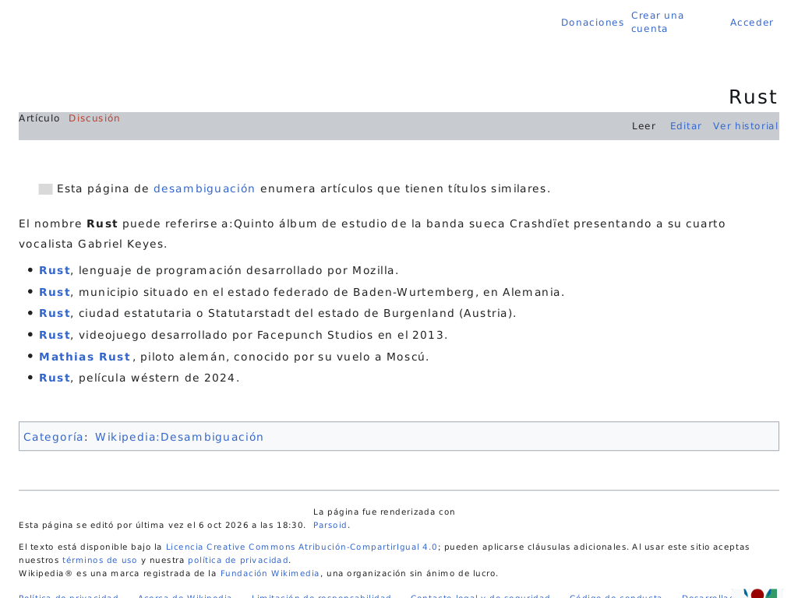
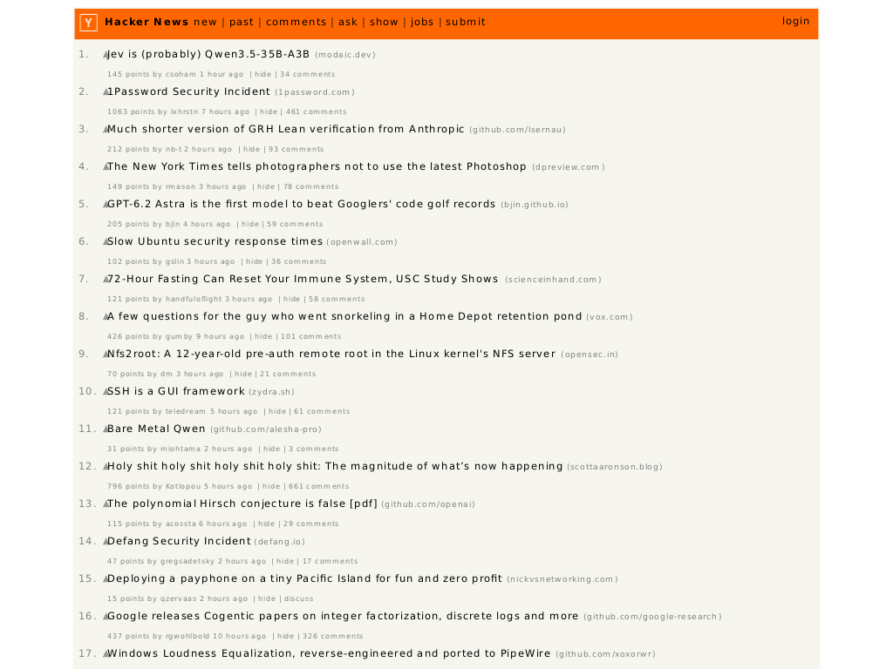

display_items = 0), avisos de imagen/layout o
errores de consola (console_errors > 0) marcan el sitio como DEGRADADO aunque el
pipeline haya terminado sin error. Las capturas son PNG reales
producidos por render. Para medir cobertura de capacidades, ver
coverage.html.
| Sitio | Resultado | display_items | Tiempo | Avisos | console_errors | Issue | Captura |
|---|---|---|---|---|---|---|---|
| example.com | PASS | 16 | 1373.1 ms | — | 0 | — |  |
| rust-lang.org | DEGRADADO | 393 | 8519.3 ms | performance budget: total 8350 > 3s performance budget: styles_pre_script 244 ms > 200ms performance budget: images 731 ms > 500ms | 0 | — |  |
| es.wikipedia.org/wiki/Rust | DEGRADADO | 433 | 1913.5 ms | skipping background image data:image/svg+xml;utf8,<svg xmlns=\"http://www.w3.org/2000/svg\" width=\"20\" height=\"20\" viewBox=\"0 0 20 20\" fill=\"%23000\"><path d=\"M8 1a7 7 0 015.605 11.191l5.102 5.102-1.414 1.414-5.102-5.102A7 7 0 118 1m0 2a5 5 0 100 10A5 5 0 008 3\"/></svg>: SVG render failed (malformed XML: attribute "xmlns" is not quoted) skipping background image data:image/svg+xml;utf8,<svg xmlns=\"http://www.w3.org/2000/svg\" width=\"20\" height=\"20\" viewBox=\"0 0 20 20\" fill=\"%23000\"><path d=\"m16.7 8-6 6H9.3l-6-6 1.4-1.4 5.3 5.3 5.3-5.3z\"/></svg>: SVG render failed (malformed XML: attribute "xmlns" is not quoted) performance budget: styles_pre_script 253 ms > 200ms | 0 | #1013 |  |
| news.ycombinator.com | PASS | 2788 | 1924.4 ms | — | 0 | #1011 |  |